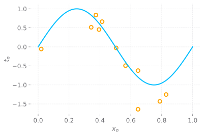

Introduction
Pattern recognition relates to discover regularities in data in an automatic way by using computer algorithms. Using the regularities that it finds, it seeks to take actions such as classifying the data into different categories.
Using the MNIST dataset as an example; we will represent the target vector
The machine learning algorithm will output a result represented by
The raw input variables are typically pre-processed to transform them into something that is easier to use to train and test the algorithm. This is called feature extraction. Pre-processing must be careful so that non of the important information is discarded.
Supervised and Unsupervised Learning
- Supervised Learning: When the training data contains examples of input vectors along their corresponding target vectors
- Unsupervised Learning: When the data consists of a set of input vectors without any corresponding target values.
| Supervised Learning | Unsupervised Learning |
|---|---|
| Regression: If the desired output consists of one or more continous variables | Clustering: when the goal is to discover groups of similar examples within the data |
| Classification: Assign each input vector to one of a finite number of discrete categories (like in the MNIST problem) | Density Estimation: Determine the distribution of data within the input space |
| Visualization: project the data from a high-dimensional space to two or three dimensions |
Reinforcement Learning
Learning algorithms in reinforcement learning are concerned with finding the action in a given situation that will give them the biggest reward. The process follows a sequence in which the algorithm performs a series of actions, which can affect the immediate reward but also may have an impact in its long term rewards. Though trial and error the algorithm learns to take the combination of actions that maximize the overall reward.
There’s an inherent tradeoff in this learning process, as the algorithm must learn to balance its exploration phase (experimenting with new actions to see how favorable they are) with its exploitation phase, in which the system makes use of actions known to give high rewards.
Polynomial Curve Fitting
Say we have

We can see that there’s an underlying regularity, which we wish to learn, but each individual observation does not follow exactly the curve, because they contain some degree of noise. This noise may arise from an intrinsic stochastic process, but more typically is due to there being some sources of variability that we have not observed.